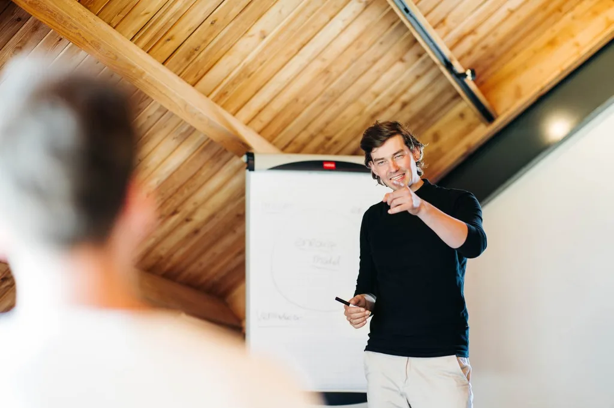
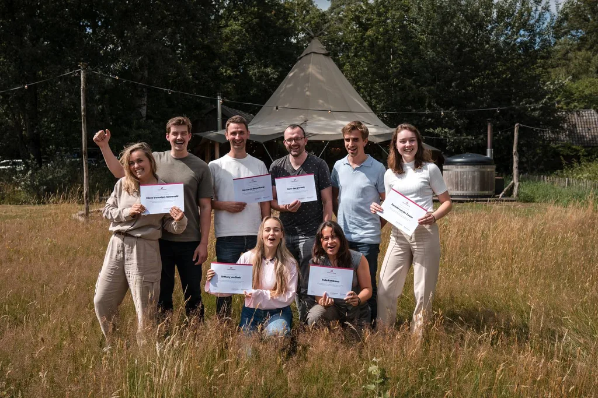

Offertes van leveranciers vergelijken met je begroting
“Dan maakt hij automatisch een offertevergelijk.” J.G. Timmer
Je kiest het kantoorproces dat jou de meeste uren kost, zoals calculatie, planning of meerwerk, en gaat naar huis met een werkende AI-oplossing. Met maximaal negen andere bouwbedrijven aan tafel om mee te sparren.



Voor wie
Je hoeft niet technisch te zijn. Je moet wel weten welk werk je elke week tegenhoudt, en zin hebben om er zelf iets voor te bouwen.
Niet voor jou als je alleen wilt kijken wat AI kan. Je bouwt twee dagen zelf, aan je eigen werk.
Wat je gaat bouwen
Dit zijn de processen waar bouwbedrijven het vaakst mee komen. Waar het al eens gebouwd is, staat erbij wat het opleverde.
“Dan maakt hij automatisch een offertevergelijk.” J.G. Timmer
“De planning komt er echt feilloos uit.” J.G. Timmer
“Van bijna vijf ochtenden naar minder dan een half uur.” Kobout
“Van een uur naar een kwartier.” Hardeman van Harten
Jouw voorbeeld kan hier straks staan.
Jouw voorbeeld kan hier straks staan.
De twee dagen
Twee dagen achter elkaar weg is in de bouw lastig. Nu mis je één dag per week, en test je tussendoor in je echte werk wat je bouwde.
Je gaat naar huis met een bouwtekening voor je oplossing.
Je gebruikt wat je op dag 1 maakte in je gewone werk. Wat schuurt of ontbreekt, neem je mee.
Je komt terug met echte knelpunten.
Je gaat naar huis met een werkende AI-toepassing.
Je neemt de prompt library, templates en je kansenkaart mee. Loop je vast, dan mail je ons.
Samen bouwen
Alleen met AI aan de slag gaan is lastig. Je weet niet wat kan en niemand kijkt mee. Hier zit je met vakgenoten die tegen hetzelfde aanlopen.
Uit de praktijk
“Ik was de grootste scepticus, maar ik vind het goud.”
“Nu kunnen ze hem gelijk meenemen.”
Normaal moet een klant twee weken op een ontwerp wachten. Nu geef ik de maten door en rolt er een 3D-tekening uit.
Je begeleiders

Ex-CMO. Weet hoe taai het is om mensen mee te krijgen in verandering, en zorgt dat de techniek niet afschrikt.

15 jaar ondernemer. Ziet AI niet als een software-update, maar als een andere manier van werken.
Aanmelden
Past het niet, dan geld terug. Blijkt na de intake dat de tweedaagse niet bij jouw processen past, dan krijg je het volledige bedrag terug.
Vragen
Nee. Je bouwt zelf, wij begeleiden. Programmeren is niet nodig. Wie een offerte kan lezen, kan dit leren.
Ja. Geef bij je aanmelding aan met hoeveel personen je komt. De prijs is per persoon, en iedereen bouwt aan een eigen proces.
We werken met Claude en koppelen het aan wat je al gebruikt, zoals je mail en Microsoft 365. Neem je eigen bestanden mee: offertes, begrotingen en planningen.
Iedereen komt uit de bouw, dus dat kan. Je bouwt wel aan je eigen proces en bepaalt zelf wat je deelt. Twijfel je, noem het dan in de intake.
Na je aanmelding doen we een korte intake. Past de tweedaagse niet bij jouw processen, dan krijg je het volledige bedrag terug.